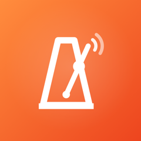

EnduraRun for iPhone and Apple Watch
Support
Get in touch
Something not working, or a question the app doesn't answer? Send a support request and you'll get a reply here.
Send a support requestRequests are posted on GitHub (a free account is needed) and are public, so please leave out personal or health details.
It helps to include:
- Your iPhone model and iOS version, and your Apple Watch model if it's involved.
- The app version: in EnduraRun, open Settings and scroll to About.
- What you did, what you expected and what happened.
- For a Watch problem: on the Watch, swipe up for settings and copy the text under "Last run from this Watch".
Help inside the app
Open EnduraRun, go to Settings and scroll to Help. You'll find the welcome tour, a six-step Quick Start and the full FAQ.
Common questions
Why did the beat pause by itself?
A call, Siri, or headphones disconnecting. EnduraRun never plays out of your iPhone's speaker in the middle of a run. It resumes when the call ends or your headphones reconnect, or you can tap Resume. Paused time isn't counted in your run.
Why does the lock screen ask me to unlock before I can pause?
That's an iPhone rule: buttons on a locked phone only work after Face ID or your passcode, for every app. A glance at the phone is usually enough. Without unlocking you can still stop from the Apple Watch app or say "Hey Siri, stop EnduraRun".
Can I run with just my Apple Watch?
Yes. Tap Start on the Watch. If music is already playing on the Watch, the beat starts from the Watch at once, over that music and through the same headphones. Otherwise it asks your iPhone first: if the iPhone is nearby it plays the beat as usual, and if it doesn't answer within a few seconds the Watch plays the beat itself.
If the Watch says "On Watch speaker", your headphones are connected to the iPhone and not to the Watch: start your music on the Watch first. To always play from the Watch, swipe up on the Watch and set "Tones from" to "Always this Watch".
Which heart-rate sources work?
Apple Watch (with the EnduraRun Watch app), AirPods Pro 3 or Powerbeats Pro 2 (turn on Apple Health in Settings), and Bluetooth chest straps or armbands that use the standard heart-rate profile.
What if the app closes during a run?
Your run is saved as you go. If the app is closed or your phone restarts mid-run, everything up to the last half minute is kept and appears in History the next time you open EnduraRun.
Why is there no calorie estimate on my runs?
The estimate needs your weight. Add it in Settings, or connect Apple Health. It is always an estimate: people differ by around 10%.
Where is my data, and how do I delete it?
On your iPhone, synced through your own private iCloud. There's no account and no EnduraRun server, so nobody else receives it.
Delete single runs in the History tab, or delete the app to remove everything on the iPhone. To remove the iCloud copy: iPhone Settings, your name, iCloud, Manage Storage, EnduraRun. More in the Privacy Policy.
How do I get a refund?
Purchases are handled by Apple. Request a refund at reportaproblem.apple.com.
Is this medical advice?
No. EnduraRun gives general fitness guidance and doesn't diagnose anything. If you have a health condition or feel unwell while running, stop and check with a doctor.